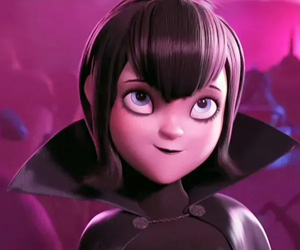

Cómo empezó todo
Un 2 de Julio me dió por responder una historia con un comentario completamente random, sin saber que ese mensaje iba a terminar siendo el inicio de una historia muy bonita en donde iba a terminar conociendo a una mujer tan maravillosa e increíble como tú.
Y es que solo bastaron 3 días para salir por primera vez y hacer "Click". Una salida en la que la pasamos muy bien, donde hicimos muchas cosas y donde al parecer yo fuí un poco dormido jajajaj.
Desde ese día supe que no queria tener una simple amistad contigo.